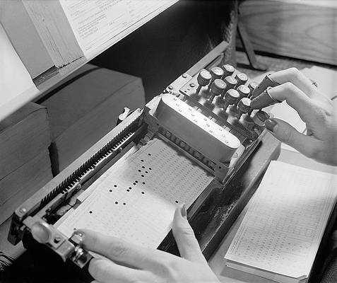

Exploring what sort of computing can be done on paper.
Color Computer
Non-electronic computers that work when you color them according to a simple set of rules. The booklet contains three series of computers: computers that compare, computers that count, and computers that play. From a technical standpoint they are all NOR-based logic circuits designed by using truth tables, karnaugh maps, and maxterm expansions.
From a social, political, and environmental perspective, these computers are an exploration of computation without electricity and semiconductors, an attempt to reinvent digital systems away from efficiency and productivity, and a hopeful prototype to expose the inner workings of computers.~

Nomograms
A nomogram is a graphical calculating device, a two-dimensional diagram designed to allow the approximate graphical computation of a function. Each variable is marked along a scale, and a line drawn through known scale values (or a straightedge placed across them) will cross the value of the unknown variable on its scale.
Example: 3 x 4 = 12

Visual Multiplication
The stick method of multiplication involves properly placing and crossing sticks. You simply lay out sticks consistent with the place values of the digits being multiplied. Then, you count the places where the sticks cross.
Example: 62 x 21 = 1302

Lattice Multiplication
Lattice multiplication is a method of multiplication that uses a lattice to multiply two multi-digit numbers.
Example: 64 x 17 = 1088

Every one knew how laborious the usual method is of attaining to arts and sciences; whereas, by his contrivance, the most ignorant person, at a reasonable charge, and with a little bodily labour, might write books in philosophy, poetry, politics, laws, mathematics, and theology, without the least assistance from genius or study.
The Engine, Jonathan Swift
- Nomographie
- Deadreckonings
- Paper Phone
- Paper Camera
- Pen & Paper games
- Cardtalk Player
- Alligator Calculus
- Sadako
- Thread
Pen & Paper Games
Hexapawn
Hexapawn is played on a rectangular board of variable size, for example on a 3×3 board or on a chessboard. On a board of size n×m, each player begins with m pawns, one for each square in the row closest to them. The goal of each player is to advance one of their pawns to the opposite end of the board or to prevent the other player from moving. ~

Sprouts
The game is played by two players starting with a few spots drawn on a sheet of paper. Players take turns, where each turn consists of drawing a line between two spots, or from a spot to itself, and adding a new spot somewhere along the new line. In so-called normal play, the player who makes the last move wins. In misère play, the player who makes the last move loses.
- A new line cannot cross itself or any other line.
- No spot may have more than three lines attached to it.
Pipelayer
The game is played with two grids of dots that are slightly offset from one another. To win a player must make a continuous connection from one side of the board to the other in the long direction for his color of dots.
- The players take turns connecting two dots.
- A player can only connect dots that are adjacent horizontally or vertically and their own color.
Capture
Capture is played on a grid of dots. The players take turns connecting dots that are horizontally or vertically adjacent. If a player can complete a square then they capture that square. You must draw another line after making a capture. A player may make multiple captures in a single turn. After the last capture they must still connect two dots.
- The players take turns connecting two dots.
- The player who captured the most squares wins.
Peg Solitaire
Pegs is played on a shape made of pegs. The standard game fills the entire board with pegs except for the central hole. The objective is, making valid moves, to empty the entire board except for a solitary peg in the central hole.
- A valid move is to jump a peg orthogonally over an adjacent peg into a hole two positions away and then to remove the jumped peg.
Paper data storage refers to the use of paper as a data storage device.
This includes writing, illustrating, and the use of data that can be interpreted by a machine or is the result of the functioning of a machine.
Punched Cards
Punched cards would encode alphanumeric characters vertically, the IBM 12-row/80-column punched card format came to dominate the industry. It encoded 960 bits of memory.
Hex Codes
You can get 3.5 kilobytes per A4 page (font size 12pt, font Inconsolata) and OCR it with gocr at 400DPI.
| 24x24 ICN Sprite | |
|---|---|
 |
0003 6331 397b 77f8 c0f0 f7ff fff0 8003 1c7e feff 0f07 078e f860 0c07 0300 301f 071f 7cf8 f007 7fff dcc0 c000 70f8 f8b0 0f07 4143 677f 7f3e ffe3 87cf cfcf 8703 84c4 8406 0efe fcf8 |
MICR
E-13B is a magnetic ink character recognition(MICR) code of 14 character, comprising the 10 decimal digits. Westminster is a printing and display typeface inspired by the machine-readable numbers printed on cheques. It's akin to encoding QR code in typography.

The design for a simple portable computer that only requires a pen and a piece of paper.
The computer consists of a sheet of paper that contains both the program as well as a number of data registers, that will be used to represent the contents of the eight registers. This is a modified and extended edition of the papiercomputer by Wolfgang Back and Ulrich Rohde.
| Commands | Registers | ||
|---|---|---|---|
| 00 | R0 | ||
| 01 | |||
| 02 | R1 | ||
| 03 | |||
| 04 | R2 | ||
| 05 | |||
| 06 | R3 | ||
| 07 | |||
| 08 | R4 | ||
| 09 | |||
| 0A | R5 | ||
| 0B | |||
| 0C | R6 | ||
| 0D | |||
| 0E | R7 | ||
| 0F | |||
To begin, the pen, representing the program counter, is positioned at the line 00 of a program. The instruction in that line is then processed by the user by either moving the pen(program counter), modifying the value of a data register or by checking if a data register has become “empty”(zeroed).
Operations
This very rudimentary instruction set will not allow to write sophisticated applications, but will teach about the use of commands to program, mnemonics to write up commands in a short code similarly to assembly language instructions and introduce the concepts of registers
ENDAborts the execution of your program, so that you can examine the contents of your data registers.SKP R#Checks if the data register R# is zero(contains no value). If it is zero, the program counter is increased by 2, otherwise the program counter is increased only by 1.JMP ##Sets the program counter to line number ##, “jump” to line ## in your program.ADD R#Increments the contents of the data register R# and increases the program counter by 1.SUB R#Decrements the contents of the data register R# and increases the program counter by 1.
Punched card
To encode a program into a 8-bits punched card, we will be using 3 bits of space to encode the operation, which leaves 5 bits for the value. This computer's programs uses only 5 operations out of a possible 8, leaving 3 unused.
| binary | operation | ||
|---|---|---|---|
| 0 | 0 | 0 | END |
| 0 | 0 | 1 | SKP |
| 0 | 1 | 0 | JMP |
| 0 | 1 | 1 | ADD |
| 1 | 0 | 0 | SUB |
| 1 | 0 | 1 | unused |
| 1 | 1 | 0 | unused |
| 1 | 1 | 1 | unused |
The following program subtracts from R1 and adds to R0 until the value of R1 is zero. The result of the addition of R0 and R1 will be stored in R0.
| line | operation | value | operation | hex | ||||||
|---|---|---|---|---|---|---|---|---|---|---|
| 00 | 0 | 1 | 0 | 0 | 0 | 0 | 1 | 1 | JMP 03 | $43 |
| 01 | 0 | 1 | 1 | 0 | 0 | 0 | 0 | 0 | ADD R0 | $60 |
| 02 | 1 | 0 | 0 | 0 | 0 | 0 | 0 | 1 | SUB R1 | $82 |
| 03 | 0 | 0 | 1 | 0 | 0 | 0 | 0 | 1 | SKP R1 | $22 |
| 04 | 0 | 1 | 0 | 0 | 0 | 0 | 0 | 1 | JMP 01 | $41 |
| 05 | 0 | 0 | 0 | 0 | 0 | 0 | 0 | 0 | END | $00 |
The binary expression of the operation and value of the previous program can be encoded vertically as the following punched card:
v v v v v v
•
• • •
• •
•
• • • •
Ref. 5-bits Table
The following table show the binary table for 32 addressable lines of a program.
| 00 | 00000 | 08 | 01000 | 10 | 100000 | 18 | 11000 |
| 01 | 00001 | 09 | 01001 | 11 | 100001 | 19 | 11001 |
| 02 | 00010 | 0A | 01010 | 12 | 100010 | 1A | 11010 |
| 03 | 00011 | 0B | 01011 | 13 | 100011 | 1B | 11011 |
| 04 | 00000 | 0C | 01100 | 14 | 100000 | 1C | 11100 |
| 05 | 00001 | 0D | 01101 | 15 | 100001 | 1D | 11101 |
| 06 | 00010 | 0E | 01110 | 16 | 100010 | 1E | 11110 |
| 07 | 00011 | 0F | 01111 | 17 | 100011 | 1F | 11111 |